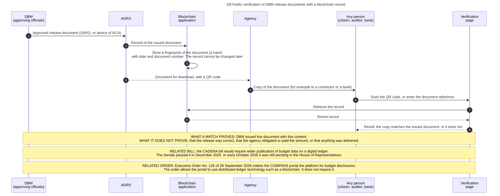

Diagram 16f · Mermaid sequence diagram
Public verification of DBM release documents with a blockchain record
Question: What does the blockchain application of DBM record, who can check it, and what does a successful check prove?

What the diagram shows
- Question: what does the blockchain application of DBM record, who can check it, and what does a successful check prove?
- Idea: the application answers one question only: "is this copy of a SARO or NCA document the same as the one DBM issued?" It does not record the budget process itself. Allotments, obligations and payments are still recorded in the systems shown in 16a and 16b.
- Sources: DBM page of 29 August 2025 on the launch of 30 July 2025: a blockchain application for the Action Document Releasing System, built with BayaniChain, with verification by QR code [DBM-BLOCKCHAIN]. ADRS delivers approved documents to authorized agency users [ADRS]. Senate vote on the CADENA bill in December 2025, bill still in the House in early October 2026 [CADENA-NEWS]. Executive Order No. 126 and the COMPASS portal, read in two official releases and one press report, not in the text of the order [EO126].
- From press reports that quote the vendor, not from DBM: the public network (Polygon), the form of the record (a token for each document), the product names. They are not drawn as facts.
- General knowledge, not opened in a source here: steps 3 and 7 describe the usual method (a hash is a short number computed from a file. Any change in the file changes the hash). The exact method of the DBM application is not described in the sources I read.
Steps
The numbers are those of the diagram.
| Step | Who acts | Towards whom | What is done or passed | Basis |
|---|---|---|---|---|
| 1 | DBM (approving officials) | ADRS | Approved release document (SARO, or advice of NCA) | DBM-BLOCKCHAIN, ADRS |
| 2 | ADRS | Blockchain application | Record of the issued document | DBM-BLOCKCHAIN, ADRS |
| 3 | Blockchain application | (own action) | Store a fingerprint of the document (a hash) with date and document number. The record cannot be changed later | GK |
| 4 | ADRS | Agency | Document for download, with a QR code | ADRS, DBM-BLOCKCHAIN |
| 5 | Agency | Any person (citizen, auditor, bank) | Copy of the document (for example to a contractor or a bank) | GK |
| 6 | Any person (citizen, auditor, bank) | Verification page | Scan the QR code, or enter the document reference | DBM-BLOCKCHAIN |
| 7 | Verification page | Blockchain application | Retrieve the record | GK |
| 8 | Blockchain application | Verification page | Stored record | DBM-BLOCKCHAIN. Method: GK |
| 9 | Verification page | Any person (citizen, auditor, bank) | Result: the copy matches the issued document, or it does not | DBM-BLOCKCHAIN. Method: GK |
Code

---
title: "16f Public verification of DBM release documents with a blockchain record"
---
sequenceDiagram
autonumber
%% QUESTION THIS DIAGRAM ANSWERS: what does the blockchain application of DBM record, who can check it, and what does a successful check prove?
%% IDEA: the application answers one question only: "is this copy of a SARO or NCA document the same as the one DBM issued?" It does not record the budget process itself. Allotments, obligations and payments are still recorded in the systems shown in 16a and 16b.
%% SOURCES: DBM page of 29 August 2025 on the launch of 30 July 2025: a blockchain application for the Action Document Releasing System, built with BayaniChain, with verification by QR code [DBM-BLOCKCHAIN]. ADRS delivers approved documents to authorized agency users [ADRS]. Senate vote on the CADENA bill in December 2025, bill still in the House in early October 2026 [CADENA-NEWS]. Executive Order No. 126 and the COMPASS portal, read in two official releases and one press report, not in the text of the order [EO126].
%% FROM PRESS REPORTS THAT QUOTE THE VENDOR, NOT FROM DBM: the public network (Polygon), the form of the record (a token for each document), the product names. They are not drawn as facts.
%% GENERAL KNOWLEDGE, NOT OPENED IN A SOURCE HERE: steps 3 and 7 describe the usual method (a hash is a short number computed from a file. Any change in the file changes the hash). The exact method of the DBM application is not described in the sources I read.
participant DBM as DBM<br/>(approving officials)
participant ADRS as ADRS
participant BC as Blockchain<br/>application
participant AGY as Agency
participant CIT as Any person<br/>(citizen, auditor, bank)
participant POR as Verification<br/>page
DBM->>ADRS: Approved release document (SARO, or advice of NCA)
ADRS->>BC: Record of the issued document
BC->>BC: Store a fingerprint of the document (a hash)<br/>with date and document number. The record cannot be changed later<br/>#nbsp;
ADRS-->>AGY: Document for download, with a QR code
AGY->>CIT: Copy of the document (for example to a contractor or a bank)
CIT->>POR: Scan the QR code, or enter the document reference
POR->>BC: Retrieve the record
BC-->>POR: Stored record
POR-->>CIT: Result: the copy matches the issued document, or it does not
Note over DBM,POR: WHAT A MATCH PROVES: DBM issued this document with this content.<br/>WHAT IT DOES NOT PROVE: that the release was correct, that the agency obligated or paid the amount, or that anything was delivered.
Note over DBM,POR: RELATED BILL: the CADENA bill would require wider publication of budget data on a digital ledger.<br/>The Senate passed it in December 2025. In early October 2026 it was still pending in the House of Representatives.
Note over DBM,POR: RELATED ORDER: Executive Order No. 126 of 28 September 2026 makes the COMPASS portal the platform for budget disclosures.<br/>The order allows the portal to use distributed ledger technology such as a blockchain. It does not require it.